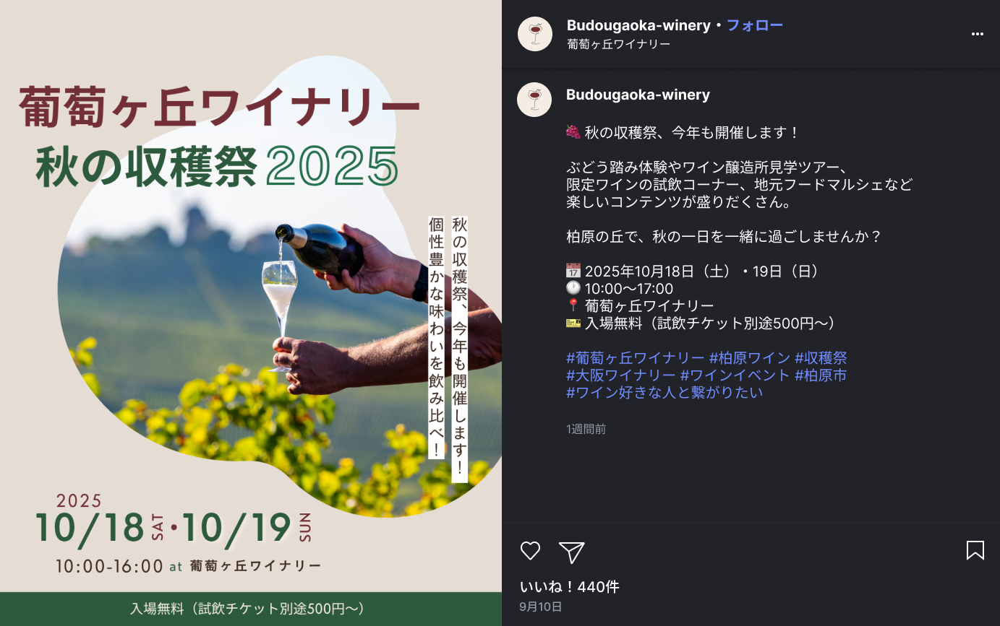
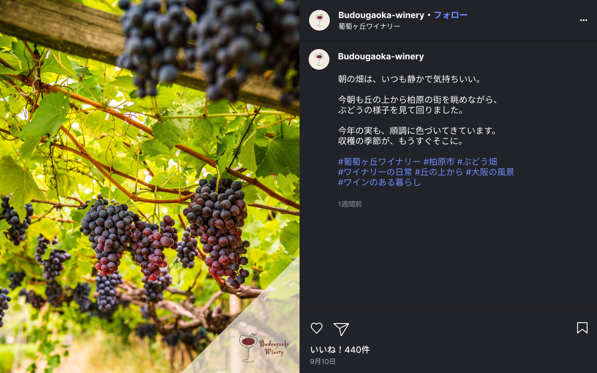
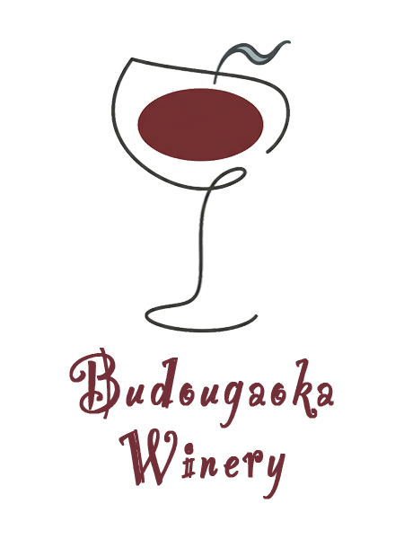
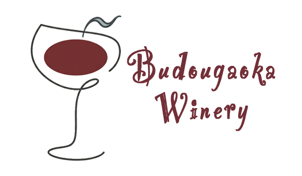
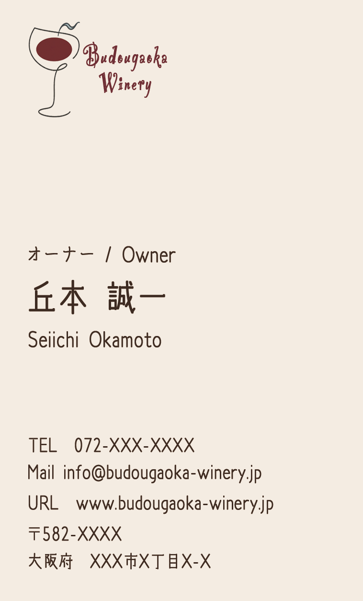
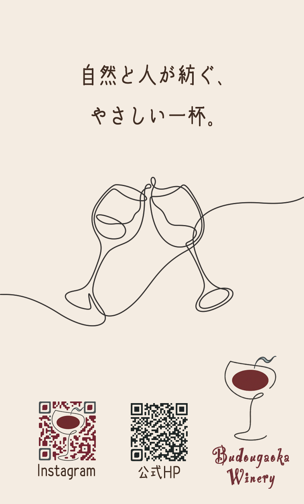
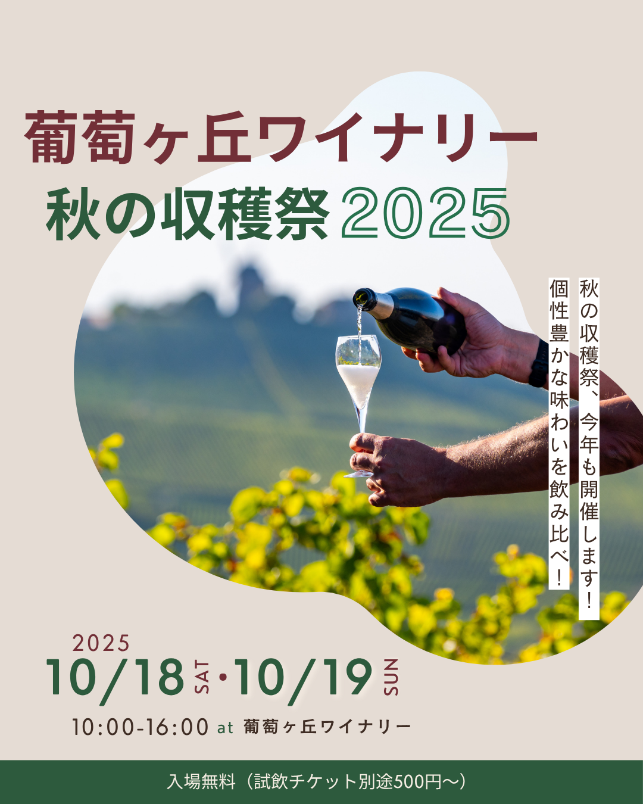
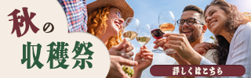
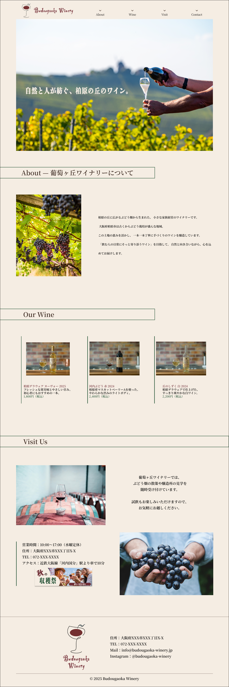

04
ワイナリーの公式Instagramを想定し、3種類の投稿をデザイン。イベント告知・新商品紹介・日常風景と、運用に必要な投稿パターンをカバーしました。キャプション文とハッシュタグも合わせて制作しています。
Canva
Figma



Branding
Architecture Client Proposal — 2025
大阪府柏原市の架空のワイナリーを想定し、ブランドに必要な制作物を一式デザインしました。ロゴ、名刺、ポスター、Webサイト、SNS投稿まで、ひとつの事業者に対してトータルで提案・制作する力をお見せできればと考えています。
01
架空のワイナリーのロゴデザイン。一筆描きのワイングラスで、ナチュラルで温かみのある雰囲気を表現しました。縦並び・横並びの2パターンを制作。


02
ロゴと統一したカラーパレットで両面の名刺をデザイン。裏面には乾杯のイラストとQRコードを配置し、ブランドの世界観が伝わる仕上がりにしました。


03
秋の収穫祭をテーマにしたA4イベント告知ポスター。写真・キャッチコピー・イベント情報の優先順位を意識してレイアウトしました。

04
ワイナリーの公式Instagramを想定し、3種類の投稿をデザイン。イベント告知・新商品紹介・日常風景と、運用に必要な投稿パターンをカバーしました。キャプション文とハッシュタグも合わせて制作しています。


05
ワイナリーのWebサイトやSNSで使用するバナーをデザイン。ブランドカラーとロゴを統一して使用し、視認性と世界観を両立した仕上がりにしました。

06
架空のワイナリーの公式LPをデザイン・構築しました。ロゴ・名刺・ポスター・SNS投稿と統一したカラーパレットでブランド全体の一貫性を意識しています。Figmaでデザインした後、HTML/CSSで構築。落ち着いた大人の雰囲気になるよう、余白を多めにとったレイアウトにしました。
